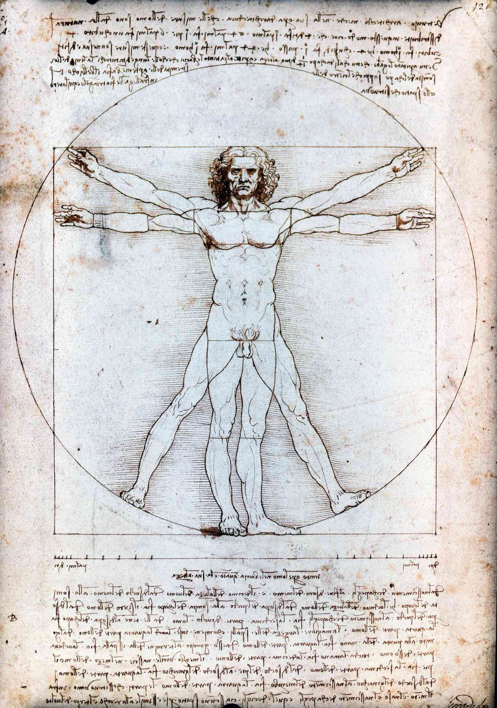
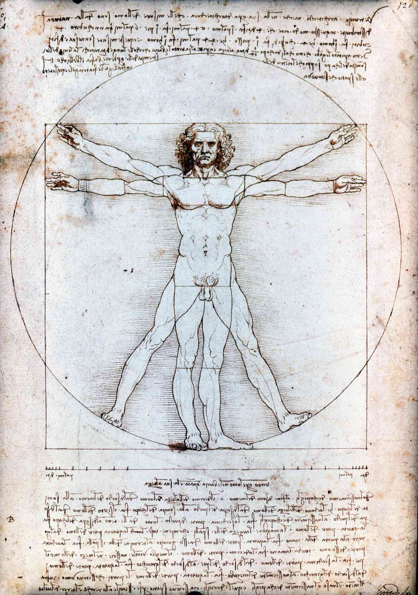

Leonardo da Vinci nació en Italia en 1452. Fue un artista y también inventó máquinas y estudió el cuerpo humano. Es uno de los personajes más importantes del Renacimiento.
Logros- Pintó la Mona Lisa
- Pintó La Última Cena
- Hizo estudios de anatomía
- Diseñó máquinas e inventos
Galería
 

Tabla de información
| Año | Evento |
|---|---|
| 1452 | Nace en Italia |
| 1519 | Fallece en Francia |
Referencias
Más información en:
Wikipedia Enciclopedia Britannica National Geographic Britannica